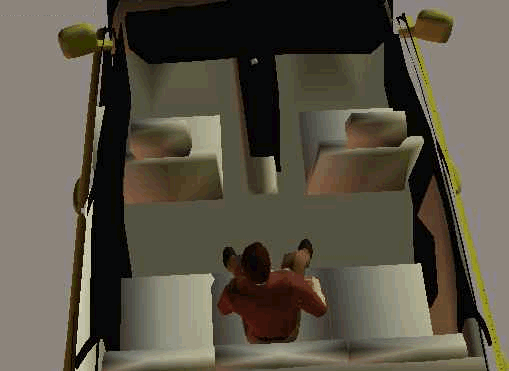

Pelvic, SI, and hip injury history created the functional problem. The later mobility record centers on avoiding repeated ballistic loading (impact shock) with each step.


From functional hypothesis to evidence corpus
A thirty year functional hypothesis, now supported by WHOOP, Strava, Kubios, and Polar H10 evidence.
HandicapSkater began with an observation: walking and skating did not affect my body the same way.
After a 1983 pelvic, SI, and hip injury, walking became the repeated test that exposed the problem.
In 1991, that difference became a functional hypothesis the first time I donned skates: skates reduced the burden of mobility while preserving movement through the world. The current data science layer turns that hypothesis into a registry of testable mobility questions using a continuous record updated weekly.
For more than thirty years, I developed that functional hypothesis through biomechanics, public access testing, transportation history, wearable data, and repeated review of skates as a non-standard mobility aid.
Observation, theory, testing
In my 2005 court pleading, Discrimination of HandicapSkater Accessibility, I described this case through the scientific method: public observation, classification of facts, inductive theory, and further testing. The court access record allowed skates into the courtroom as a mobility aid.
The original observation was simple. Walking and skating produced different functional results. Walking was an active ballistic motion. It repeatedly loaded the pelvis, SI, and hip system through vertical stepping or impact shocks. Skating is active controlled rolling that uses horizontal propulsion and may reduce the repeated pelvic torsion pattern associated with ballistic walking. It allowed posture, route choice, timing, and continuous motion.
The hypothesis was also simple: inline skates can function as a mobility aid because rolling contact preserves more usable forward motion between pushes, while walking repeatedly redirects, brakes, and rebuilds forward motion through each ballistic step.
This does not violate conservation of momentum; both walking and skating exchange momentum with the ground. The difference is how much usable forward motion carries over between movement cycles.
The testing did not happen in a laboratory alone. It happened in public life.
Structured evidence
What began as observation has now become structured evidence.
WHOOP and Strava added longitudinal data beginning in 2020. Those records show repeated activity patterns across skating, walking, route distance, recovery, and physiologic response.
In 2026, Polar H10 and Kubios added episodic HR, RMSSD, ACC and motion exposure data. Those sessions sharpened the contrast between walking, controlled skating, motorcycle riding, and ParaTransit vehicle burden.
The current refined mobility science corpus separates three layers: physiologic burden, mechanical motion exposure, and body coupling. HR and RMSSD support physiologic review. ACC, jerk, and shock describe mechanical exposure at the sensor. Body coupling explains whether the activity is active controlled, active ballistic, passive passenger, or recovery baseline.
Observation in public life
The photographs, letters, access disputes, transit records, airport experiences, court records, transportation history, and public videos are not separate from the science. They show where the hypothesis was tested.
This story page uses those materials to document a repeated pattern. When skates were reviewed by function, they worked as a mobility aid. When systems reviewed them only as unfamiliar equipment, access was denied, walking burden increased, and transportation alternatives imposed conditions that did not match the actual disability mechanics.
The current data does not replace that history. It explains it.
More than thirty years
Pelvic, SI, and hip injury history created the functional problem. The later mobility record centers on avoiding repeated ballistic loading (impact shock) with each step.

Inline skates became the working hypothesis. Rolling movement preserved mobility where walking imposed disproportionate burden.
Biomechanics literature (Mahar, et al., Impact shock and attenuation during in-line skating) supported the distinction between impact attenuation and repeated ballistic loading during walking.
Transit, public access, and accommodation disputes created a public record of how systems responded to skates used as a mobility aid.
2003 CalTrain Civil Rights ViolationI formulated an inductive theory that skates reduced mobility burden while improving functional movement in 1991. In 1997, Andrew Mahar, et. al, conducted an independent deductive experiment bolstering my theory.
In my 2005 court pleading, I expanded the inductive theory and explained that riding a motorcycle with skates became a practical accommodation after public transportation failed to accommodate my skates as a mobility aid or provide an effective alternative accommodation.
Discrimination of HandicapSkater Accessibility

WHOOP and Strava records added longitudinal wearable and route data across skating, walking, ParaTransit, recovery, and mobility output.
After riding a motorcycle with skates since 2005, a police officer stopped me, could not issue a moving violation, and sent an incident report to the DMV claiming I lacked motorcycle control, which led to a license suspension. I am now certified to ride/drive with skates, but it is represented as a restriction rather than an accommodation, creating additional civil rights concerns.
In my 2022 DMV Licensing Operations Division pleading, I documented the driving-accommodation issue. The 2022 DMV record later documented my ability to ride and drive with skates, leading to DMV certification. HandicapSkater Driving Accommodation
2022 DMV certifying that I can ride and drive with skates.

Kubios and Polar H10 testing added episodic HR, RMSSD, and ACC motion exposure records for walking, skating, motorcycle transport, and ParaTransit vehicle conditions.
The refined corpus now contains 2,171 records with body coupling context and physiologic efficiency fields for all records. Eighty one records include ACC shock component metrics.
Context before conclusions
The current evidence model does not collapse mobility into one score. It separates what the body shows physiologically, what the sensor records mechanically, and how the body is coupled to the activity.
Walking shows higher HR burden than controlled skating contexts. Mall skating is the cleanest duration comparable contrast supporting longer tolerated activity at lower HR than walking.
Motorcycle riding can show higher raw ACC and jerk while remaining active controlled transport. ParaTransit is different. It is passive passenger exposure. Vehicle type, route, duration, seat position, and seated shock path must be reviewed separately.
This is why the story matters. The central issue is not whether skates look familiar. The issue is whether the mobility aid works in the actual body and context being reviewed.
Function over category
For decades, public systems treated the mobility aid as the problem. The record shows a different pattern. The problem was a category failure.
Skates looked like recreation, so the function was missed. Motorcycle transport looked unfamiliar, so the adaptation was missed. ParaTransit looked like access, so passive seated burden was missed. Walking looked ordinary, so the physiologic burden was missed.
The present appeal is one part of the public access record. It is not the center of the scientific claim.
The Story page is where those errors become visible. The Evidence Corpus page shows the current corpus. The Videos page shows function in the world. The Strava maps show route tolerance. The ParaTransit page explains passive passenger exposure. The standards site explains how reviewers should avoid flattening the evidence.